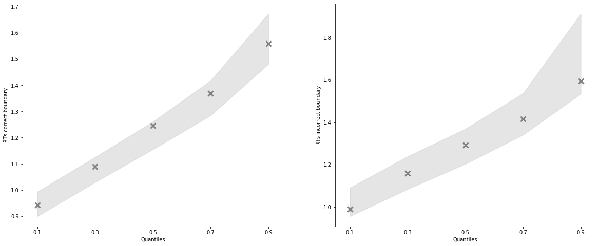
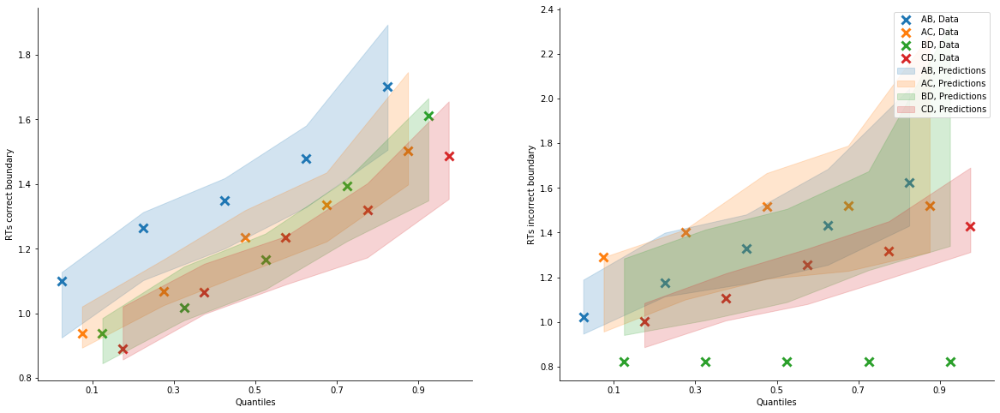

[1]:
import rlssm
import pandas as pd
import os
/Users/Khamir/opt/anaconda3/lib/python3.7/site-packages/statsmodels/tools/_testing.py:19: FutureWarning: pandas.util.testing is deprecated. Use the functions in the public API at pandas.testing instead.
import pandas.util.testing as tm
[2]:
par_path = os.path.abspath(os.path.join(os.getcwd(), os.pardir))
data_path = os.path.join(par_path, 'data/data_experiment.csv')
data = pd.read_csv(data_path, index_col=0)
data = data[data.participant == 12].reset_index(drop=True)
data['block_label'] += 1
# data = data[data['trial_block'] == 1]
data
INFO:numexpr.utils:NumExpr defaulting to 4 threads.
[2]:
| participant | block_label | trial_block | f_cor | f_inc | cor_option | inc_option | times_seen | rt | accuracy | |
|---|---|---|---|---|---|---|---|---|---|---|
| 0 | 12 | 1.0 | 1.0 | 48.0 | 40.0 | 4 | 2 | 1.0 | 0.822152 | 0.0 |
| 1 | 12 | 1.0 | 2.0 | 50.0 | 37.0 | 3 | 1 | 1.0 | 0.858400 | 1.0 |
| 2 | 12 | 1.0 | 3.0 | 62.0 | 41.0 | 4 | 2 | 2.0 | 1.014982 | 1.0 |
| 3 | 12 | 1.0 | 4.0 | 47.0 | 36.0 | 3 | 1 | 2.0 | 1.001788 | 1.0 |
| 4 | 12 | 1.0 | 5.0 | 54.0 | 39.0 | 4 | 2 | 3.0 | 0.985146 | 1.0 |
| ... | ... | ... | ... | ... | ... | ... | ... | ... | ... | ... |
| 233 | 12 | 3.0 | 76.0 | 55.0 | 40.0 | 4 | 2 | 38.5 | 0.914431 | 1.0 |
| 234 | 12 | 3.0 | 77.0 | 52.0 | 37.0 | 3 | 1 | 38.5 | 1.276829 | 1.0 |
| 235 | 12 | 3.0 | 78.0 | 49.0 | 48.0 | 4 | 3 | 40.0 | 1.299635 | 1.0 |
| 236 | 12 | 3.0 | 79.0 | 34.0 | 33.0 | 2 | 1 | 39.0 | 1.116690 | 1.0 |
| 237 | 12 | 3.0 | 80.0 | 44.0 | 37.0 | 2 | 1 | 40.0 | 1.117028 | 1.0 |
238 rows × 10 columns
[3]:
model = rlssm.RLLBAModel_2A(1,
separate_learning_rates=True,
nonlinear_mapping=True)
INFO:pystan:COMPILING THE C++ CODE FOR MODEL anon_model_d515be048bb2b9d5867a152e95955c84 NOW.
[4]:
model.family, model.model_label, model.hierarchical_levels
[4]:
('RLLBA_2A', 'RLLBA_2A_2lr_nonlin', 1)
[5]:
# sampling parameters
n_iter = 700
n_chains = 2
n_thin = 5
# learning parameters
K = 4 # n options
initial_value_learning = 17.5 # intitial value (Q0)
[6]:
model_fit = model.fit(data,
K,
initial_value_learning,
thin = n_thin,
iter = n_iter,
chains = n_chains)
WARNING:pystan:Maximum (flat) parameter count (1000) exceeded: skipping diagnostic tests for n_eff and Rhat.
To run all diagnostics call pystan.check_hmc_diagnostics(fit)
Checks MCMC diagnostics:
n_eff / iter looks reasonable for all parameters
0.0 of 140 iterations ended with a divergence (0.0%)
0 of 140 iterations saturated the maximum tree depth of 10 (0.0%)
E-BFMI indicated no pathological behavior
[7]:
model_fit.rhat.describe()
[7]:
| rhat | |
|---|---|
| count | 7.000000 |
| mean | 1.011143 |
| std | 0.018855 |
| min | 0.993632 |
| 25% | 0.996448 |
| 50% | 1.002308 |
| 75% | 1.025344 |
| max | 1.038480 |
[8]:
model_fit.rhat.head()
[8]:
| rhat | variable | |
|---|---|---|
| 0 | 0.996796 | k |
| 1 | 0.993632 | A |
| 2 | 0.996099 | tau |
| 3 | 1.038480 | utility |
| 4 | 1.002308 | alpha_pos |
[9]:
model_fit.waic
[9]:
{'lppd': -104.98653219669288,
'p_waic': 5.4588580076813695,
'waic': 220.8907804087485,
'waic_se': 31.393334154754495}
[10]:
model_fit.samples
[10]:
| chain | draw | transf_k | transf_A | transf_tau | transf_utility | transf_alpha_pos | transf_alpha_neg | transf_drift_scaling | |
|---|---|---|---|---|---|---|---|---|---|
| 0 | 0 | 58 | 2.841532 | 2.694108 | 0.329373 | 0.644961 | 0.918454 | 0.108045 | 0.297604 |
| 1 | 0 | 40 | 3.254653 | 3.517330 | 0.260784 | 0.744035 | 0.863941 | 0.061824 | 0.226235 |
| 2 | 0 | 9 | 2.673447 | 3.135661 | 0.369912 | 0.636919 | 0.956897 | 0.188303 | 0.323824 |
| 3 | 0 | 8 | 2.995327 | 2.262036 | 0.269100 | 0.589326 | 0.922545 | 0.269057 | 0.353416 |
| 4 | 0 | 48 | 4.346284 | 3.200641 | 0.135168 | 0.648688 | 0.967526 | 0.074594 | 0.344372 |
| ... | ... | ... | ... | ... | ... | ... | ... | ... | ... |
| 135 | 1 | 40 | 3.534739 | 2.178542 | 0.265457 | 0.566039 | 0.719450 | 0.155248 | 0.443995 |
| 136 | 1 | 56 | 3.396113 | 2.720786 | 0.269108 | 0.579172 | 0.959560 | 0.136786 | 0.425948 |
| 137 | 1 | 31 | 3.249036 | 2.611519 | 0.229428 | 0.615474 | 0.894072 | 0.124815 | 0.344313 |
| 138 | 1 | 48 | 2.845714 | 2.313916 | 0.323951 | 0.643592 | 0.786174 | 0.188358 | 0.286789 |
| 139 | 1 | 18 | 1.865764 | 3.232946 | 0.464980 | 0.578472 | 0.599882 | 0.427703 | 0.385673 |
140 rows × 9 columns
[11]:
model_fit.trial_samples
[11]:
OrderedDict([('k_t',
array([[2.84153204, 2.84153204, 2.84153204, ..., 2.84153204, 2.84153204,
2.84153204],
[3.25465338, 3.25465338, 3.25465338, ..., 3.25465338, 3.25465338,
3.25465338],
[2.67344733, 2.67344733, 2.67344733, ..., 2.67344733, 2.67344733,
2.67344733],
...,
[3.24903579, 3.24903579, 3.24903579, ..., 3.24903579, 3.24903579,
3.24903579],
[2.84571398, 2.84571398, 2.84571398, ..., 2.84571398, 2.84571398,
2.84571398],
[1.86576361, 1.86576361, 1.86576361, ..., 1.86576361, 1.86576361,
1.86576361]])),
('A_t',
array([[2.69410763, 2.69410763, 2.69410763, ..., 2.69410763, 2.69410763,
2.69410763],
[3.51732979, 3.51732979, 3.51732979, ..., 3.51732979, 3.51732979,
3.51732979],
[3.1356606 , 3.1356606 , 3.1356606 , ..., 3.1356606 , 3.1356606 ,
3.1356606 ],
...,
[2.61151876, 2.61151876, 2.61151876, ..., 2.61151876, 2.61151876,
2.61151876],
[2.3139156 , 2.3139156 , 2.3139156 , ..., 2.3139156 , 2.3139156 ,
2.3139156 ],
[3.2329461 , 3.2329461 , 3.2329461 , ..., 3.2329461 , 3.2329461 ,
3.2329461 ]])),
('tau_t',
array([[0.32937259, 0.32937259, 0.32937259, ..., 0.32937259, 0.32937259,
0.32937259],
[0.26078411, 0.26078411, 0.26078411, ..., 0.26078411, 0.26078411,
0.26078411],
[0.36991171, 0.36991171, 0.36991171, ..., 0.36991171, 0.36991171,
0.36991171],
...,
[0.22942792, 0.22942792, 0.22942792, ..., 0.22942792, 0.22942792,
0.22942792],
[0.32395052, 0.32395052, 0.32395052, ..., 0.32395052, 0.32395052,
0.32395052],
[0.46497983, 0.46497983, 0.46497983, ..., 0.46497983, 0.46497983,
0.46497983]])),
('drift_cor_t',
array([[1.95395808, 1.95395808, 3.89260869, ..., 4.12457641, 3.77825364,
3.69881189],
[1.98325846, 1.98325846, 4.26424199, ..., 4.66308148, 4.22800825,
4.17021002],
[2.07680367, 2.07680367, 4.17337171, ..., 4.39525015, 3.94471784,
3.80645533],
...,
[2.07426603, 2.07426603, 3.96100288, ..., 4.24158474, 3.8779109 ,
3.78912124],
[1.87544674, 1.87544674, 3.49970621, ..., 3.99148549, 3.55162003,
3.43056233],
[2.08565111, 2.08565111, 3.33265981, ..., 4.12871661, 3.52840512,
3.33614874]])),
('drift_inc_t',
array([[1.95395808, 1.95395808, 2.77204746, ..., 3.96447194, 2.85308933,
2.85146737],
[1.98325846, 1.98325846, 2.91385127, ..., 4.5965293 , 3.19996839,
3.19080483],
[2.07680367, 2.07680367, 2.96613568, ..., 4.04376609, 2.96169683,
2.96940077],
...,
[2.07426603, 2.07426603, 2.87619954, ..., 4.04518036, 2.96471752,
2.96435621],
[1.87544674, 1.87544674, 2.55439972, ..., 3.66607005, 2.6889584 ,
2.6951737 ],
[2.08565111, 2.08565111, 2.6065162 , ..., 3.63147109, 2.9190493 ,
2.91731059]]))])
[12]:
model_fit.plot_posteriors(height=5, show_intervals='HDI');

[13]:
pp = model_fit.get_posterior_predictives_df(n_posterior_predictives=100)
pp
[13]:
| variable | rt | ... | accuracy | ||||||||||||||||||
|---|---|---|---|---|---|---|---|---|---|---|---|---|---|---|---|---|---|---|---|---|---|
| trial | 1 | 2 | 3 | 4 | 5 | 6 | 7 | 8 | 9 | 10 | ... | 229 | 230 | 231 | 232 | 233 | 234 | 235 | 236 | 237 | 238 |
| sample | |||||||||||||||||||||
| 1 | 2.221709 | 1.394914 | 1.277660 | 1.642293 | 1.411006 | 1.446194 | 1.011404 | 1.306512 | 1.381022 | 1.260572 | ... | 1.0 | 1.0 | 1.0 | 1.0 | 0.0 | 0.0 | 1.0 | 1.0 | 1.0 | 1.0 |
| 2 | 1.923014 | 2.411529 | 2.881190 | 1.929105 | 1.054106 | 1.535781 | 1.049240 | 1.197908 | 1.299070 | 1.516325 | ... | 1.0 | 1.0 | 1.0 | 1.0 | 1.0 | 1.0 | 1.0 | 1.0 | 1.0 | 0.0 |
| 3 | 1.980809 | 1.487230 | 1.204467 | 1.099661 | 1.503145 | 1.118977 | 1.362675 | 1.257058 | 1.506049 | 0.796082 | ... | 1.0 | 0.0 | 0.0 | 1.0 | 0.0 | 1.0 | 1.0 | 1.0 | 1.0 | 0.0 |
| 4 | 3.761024 | 2.213451 | 1.048525 | 1.465999 | 1.353937 | 1.242927 | 1.237892 | 1.219788 | 1.106655 | 1.119330 | ... | 0.0 | 1.0 | 1.0 | 1.0 | 1.0 | 1.0 | 1.0 | 1.0 | 0.0 | 0.0 |
| 5 | 2.243472 | 1.846575 | 0.995590 | 1.435999 | 1.278851 | 2.020460 | 1.293972 | 1.219503 | 1.655884 | 1.195253 | ... | 1.0 | 1.0 | 1.0 | 1.0 | 1.0 | 0.0 | 1.0 | 0.0 | 0.0 | 1.0 |
| ... | ... | ... | ... | ... | ... | ... | ... | ... | ... | ... | ... | ... | ... | ... | ... | ... | ... | ... | ... | ... | ... |
| 96 | 1.131299 | 2.577401 | 1.252099 | 1.719494 | 1.867399 | 1.138826 | 1.281121 | 1.384601 | 1.255718 | 0.939300 | ... | 1.0 | 1.0 | 1.0 | 1.0 | 1.0 | 1.0 | 1.0 | 0.0 | 1.0 | 0.0 |
| 97 | 1.836602 | 1.808295 | 1.261357 | 1.006625 | 1.235199 | 0.980976 | 1.368954 | 1.349670 | 1.222114 | 1.454488 | ... | 0.0 | 1.0 | 0.0 | 1.0 | 0.0 | 1.0 | 1.0 | 1.0 | 1.0 | 1.0 |
| 98 | 1.642232 | 1.455724 | 2.207860 | 1.296938 | 1.000174 | 2.047301 | 0.986986 | 1.232620 | 0.951521 | 1.797646 | ... | 0.0 | 0.0 | 1.0 | 0.0 | 1.0 | 0.0 | 1.0 | 1.0 | 1.0 | 0.0 |
| 99 | 1.334103 | 2.470005 | 1.456099 | 1.645061 | 0.949272 | 1.292290 | 1.327140 | 1.771730 | 1.566293 | 1.278511 | ... | 1.0 | 0.0 | 0.0 | 1.0 | 1.0 | 1.0 | 1.0 | 0.0 | 1.0 | 1.0 |
| 100 | 1.529068 | 1.459931 | 1.464528 | 0.996007 | 0.921831 | 0.910368 | 1.395590 | 0.950724 | 1.212692 | 1.139818 | ... | 1.0 | 1.0 | 0.0 | 1.0 | 1.0 | 1.0 | 1.0 | 0.0 | 1.0 | 0.0 |
100 rows × 476 columns
[14]:
pp_summary = model_fit.get_posterior_predictives_summary(n_posterior_predictives=100)
pp_summary
[14]:
| mean_accuracy | mean_rt | skewness | quant_10_rt_incorrect | quant_30_rt_incorrect | quant_50_rt_incorrect | quant_70_rt_incorrect | quant_90_rt_incorrect | quant_10_rt_correct | quant_30_rt_correct | quant_50_rt_correct | quant_70_rt_correct | quant_90_rt_correct | |
|---|---|---|---|---|---|---|---|---|---|---|---|---|---|
| sample | |||||||||||||
| 1 | 0.718487 | 1.274451 | 1.643818 | 1.030919 | 1.135709 | 1.345448 | 1.477843 | 1.775642 | 0.942595 | 1.083718 | 1.199879 | 1.304729 | 1.525782 |
| 2 | 0.760504 | 1.240398 | 1.916102 | 0.974093 | 1.141392 | 1.294360 | 1.431089 | 1.621407 | 0.918494 | 1.083626 | 1.185271 | 1.308145 | 1.508215 |
| 3 | 0.760504 | 1.252361 | 0.679999 | 1.015214 | 1.158594 | 1.269387 | 1.396577 | 1.596200 | 0.949312 | 1.082670 | 1.190119 | 1.310806 | 1.588188 |
| 4 | 0.798319 | 1.320361 | 2.265018 | 1.056545 | 1.217361 | 1.322063 | 1.454453 | 1.892826 | 1.004637 | 1.132922 | 1.237404 | 1.384498 | 1.619225 |
| 5 | 0.743697 | 1.285936 | 0.535508 | 1.043657 | 1.222213 | 1.370226 | 1.458275 | 1.636185 | 0.949936 | 1.104742 | 1.251668 | 1.391212 | 1.598825 |
| ... | ... | ... | ... | ... | ... | ... | ... | ... | ... | ... | ... | ... | ... |
| 96 | 0.752101 | 1.293142 | 4.889465 | 1.021142 | 1.153353 | 1.265440 | 1.436025 | 1.576137 | 0.956535 | 1.103912 | 1.213291 | 1.385809 | 1.570553 |
| 97 | 0.756303 | 1.253634 | 2.266969 | 1.023149 | 1.180295 | 1.253685 | 1.357626 | 1.588800 | 0.936262 | 1.073321 | 1.186623 | 1.305731 | 1.594933 |
| 98 | 0.739496 | 1.279856 | 1.896808 | 1.057566 | 1.158112 | 1.270706 | 1.389628 | 1.772273 | 0.933001 | 1.099599 | 1.220398 | 1.333162 | 1.611006 |
| 99 | 0.735294 | 1.272765 | 0.859916 | 1.056721 | 1.147467 | 1.292362 | 1.462353 | 1.732032 | 0.960830 | 1.097494 | 1.192551 | 1.342785 | 1.579558 |
| 100 | 0.768908 | 1.289179 | 1.640608 | 1.061618 | 1.189498 | 1.287134 | 1.420368 | 1.743774 | 0.963504 | 1.101402 | 1.230910 | 1.382902 | 1.628423 |
100 rows × 13 columns
[15]:
g = model_fit.plot_mean_posterior_predictives(n_posterior_predictives=100, figsize=(20,8), show_intervals='HDI')

[16]:
model_fit.plot_quantiles_posterior_predictives(n_posterior_predictives=100, kind='shades');

Grouped¶
[17]:
import numpy as np
[18]:
data['choice_pair'] = 'AB'
data.loc[(data.cor_option == 3) & (data.inc_option == 1), 'choice_pair'] = 'AC'
data.loc[(data.cor_option == 4) & (data.inc_option == 2), 'choice_pair'] = 'BD'
data.loc[(data.cor_option == 4) & (data.inc_option == 3), 'choice_pair'] = 'CD'
data['block_bins'] = pd.cut(data.trial_block, 8, labels=np.arange(1, 9))
[19]:
data.head()
[19]:
| index | participant | block_label | trial_block | f_cor | f_inc | cor_option | inc_option | times_seen | rt | accuracy | accuracy_rescale | choice_pair | block_bins | |
|---|---|---|---|---|---|---|---|---|---|---|---|---|---|---|
| 0 | 0 | 12 | 1.0 | 1.0 | 48.0 | 40.0 | 4 | 2 | 1.0 | 0.822152 | 0.0 | 2 | BD | 1 |
| 1 | 1 | 12 | 1.0 | 2.0 | 50.0 | 37.0 | 3 | 1 | 1.0 | 0.858400 | 1.0 | 1 | AC | 1 |
| 2 | 2 | 12 | 1.0 | 3.0 | 62.0 | 41.0 | 4 | 2 | 2.0 | 1.014982 | 1.0 | 1 | BD | 1 |
| 3 | 3 | 12 | 1.0 | 4.0 | 47.0 | 36.0 | 3 | 1 | 2.0 | 1.001788 | 1.0 | 1 | AC | 1 |
| 4 | 4 | 12 | 1.0 | 5.0 | 54.0 | 39.0 | 4 | 2 | 3.0 | 0.985146 | 1.0 | 1 | BD | 1 |
[20]:
model_fit.get_grouped_posterior_predictives_summary(
grouping_vars=['block_label', 'choice_pair'],
quantiles=[.3, .5, .7],
n_posterior_predictives=100)
[20]:
| mean_accuracy | mean_rt | skewness | quant_30_rt_incorrect | quant_30_rt_correct | quant_50_rt_incorrect | quant_50_rt_correct | quant_70_rt_incorrect | quant_70_rt_correct | |||
|---|---|---|---|---|---|---|---|---|---|---|---|
| block_label | choice_pair | sample | |||||||||
| 1.0 | AB | 1 | 0.684211 | 1.369489 | 1.264119 | 1.267497 | 1.083911 | 1.333377 | 1.227685 | 1.713478 | 1.336148 |
| 2 | 0.684211 | 1.419224 | 0.073023 | 1.335996 | 1.223544 | 1.464978 | 1.384189 | 1.621160 | 1.538537 | ||
| 3 | 0.473684 | 1.252893 | 1.031477 | 1.176290 | 0.987424 | 1.247995 | 1.169016 | 1.363291 | 1.336214 | ||
| 4 | 0.684211 | 1.355384 | 1.061106 | 1.260787 | 1.094512 | 1.340876 | 1.170061 | 1.590058 | 1.388033 | ||
| 5 | 0.684211 | 1.399828 | 1.131087 | 1.389842 | 1.206369 | 1.435598 | 1.281372 | 1.491361 | 1.410400 | ||
| ... | ... | ... | ... | ... | ... | ... | ... | ... | ... | ... | ... |
| 3.0 | CD | 96 | 0.700000 | 1.307264 | 0.253867 | 1.203340 | 1.132104 | 1.413784 | 1.233969 | 1.585651 | 1.330469 |
| 97 | 0.700000 | 1.237772 | 0.078422 | 1.089758 | 1.095135 | 1.213282 | 1.223918 | 1.354415 | 1.337198 | ||
| 98 | 0.600000 | 1.256278 | 0.628467 | 1.122038 | 1.103937 | 1.229941 | 1.278294 | 1.257295 | 1.525829 | ||
| 99 | 0.550000 | 1.176551 | 0.313268 | 1.058831 | 0.993862 | 1.276960 | 1.025985 | 1.345622 | 1.135521 | ||
| 100 | 0.800000 | 1.264111 | 0.163975 | 1.369463 | 1.086971 | 1.444398 | 1.194952 | 1.493909 | 1.339356 |
1200 rows × 9 columns
[21]:
model_fit.get_grouped_posterior_predictives_summary(
grouping_vars=['block_bins'],
quantiles=[.3, .5, .7],
n_posterior_predictives=100)
[21]:
| mean_accuracy | mean_rt | skewness | quant_30_rt_incorrect | quant_30_rt_correct | quant_50_rt_incorrect | quant_50_rt_correct | quant_70_rt_incorrect | quant_70_rt_correct | ||
|---|---|---|---|---|---|---|---|---|---|---|
| block_bins | sample | |||||||||
| 1 | 1 | 0.600000 | 1.318575 | 1.534440 | 1.153459 | 1.197511 | 1.349075 | 1.279877 | 1.435067 | 1.305984 |
| 2 | 0.600000 | 1.378868 | 1.335376 | 1.281456 | 1.007871 | 1.365802 | 1.268973 | 1.595107 | 1.400441 | |
| 3 | 0.633333 | 1.347692 | 0.287015 | 1.535463 | 1.056087 | 1.551916 | 1.185931 | 1.604950 | 1.427905 | |
| 4 | 0.733333 | 1.372231 | 0.976527 | 1.231777 | 1.042304 | 1.436900 | 1.158491 | 1.707418 | 1.472534 | |
| 5 | 0.633333 | 1.361983 | 2.382926 | 1.182545 | 1.016579 | 1.252749 | 1.193897 | 1.662323 | 1.290234 | |
| ... | ... | ... | ... | ... | ... | ... | ... | ... | ... | ... |
| 8 | 96 | 0.785714 | 1.258776 | 0.527443 | 1.288105 | 1.116860 | 1.388447 | 1.222792 | 1.397655 | 1.352073 |
| 97 | 0.678571 | 1.247957 | 1.301926 | 1.115377 | 1.166127 | 1.162916 | 1.239564 | 1.198639 | 1.358761 | |
| 98 | 0.750000 | 1.172267 | 0.433351 | 1.130239 | 1.051746 | 1.150553 | 1.161233 | 1.441976 | 1.192441 | |
| 99 | 0.785714 | 1.156699 | 1.235410 | 1.068209 | 1.048765 | 1.143422 | 1.106172 | 1.215426 | 1.243909 | |
| 100 | 0.821429 | 1.217062 | 0.762974 | 1.108045 | 1.027132 | 1.181416 | 1.168351 | 1.283521 | 1.365439 |
800 rows × 9 columns
[22]:
data.head()
[22]:
| index | participant | block_label | trial_block | f_cor | f_inc | cor_option | inc_option | times_seen | rt | accuracy | accuracy_rescale | choice_pair | block_bins | |
|---|---|---|---|---|---|---|---|---|---|---|---|---|---|---|
| 0 | 0 | 12 | 1.0 | 1.0 | 48.0 | 40.0 | 4 | 2 | 1.0 | 0.822152 | 0.0 | 2 | BD | 1 |
| 1 | 1 | 12 | 1.0 | 2.0 | 50.0 | 37.0 | 3 | 1 | 1.0 | 0.858400 | 1.0 | 1 | AC | 1 |
| 2 | 2 | 12 | 1.0 | 3.0 | 62.0 | 41.0 | 4 | 2 | 2.0 | 1.014982 | 1.0 | 1 | BD | 1 |
| 3 | 3 | 12 | 1.0 | 4.0 | 47.0 | 36.0 | 3 | 1 | 2.0 | 1.001788 | 1.0 | 1 | AC | 1 |
| 4 | 4 | 12 | 1.0 | 5.0 | 54.0 | 39.0 | 4 | 2 | 3.0 | 0.985146 | 1.0 | 1 | BD | 1 |
[23]:
model_fit.plot_mean_grouped_posterior_predictives(grouping_vars=['block_bins', 'choice_pair'],
n_posterior_predictives=100,
figsize=(20,8));

[24]:
model_fit.plot_quantiles_grouped_posterior_predictives(
n_posterior_predictives=100,
grouping_var='choice_pair',
kind='shades',
quantiles=[.1, .3, .5, .7, .9]);

[25]:
import seaborn as sns
[26]:
model_fit.plot_quantiles_grouped_posterior_predictives(
n_posterior_predictives=300,
grouping_var='choice_pair',
palette = sns.color_palette('husl'),
intervals_kws={'alpha': .3, 'lw':8},
hue_order=['AB', 'AC', 'BD', 'CD'],
hue_labels=['ab', 'ac', 'bd', 'cd']);
/Users/Khamir/DecisionMaking/_Reports/_7/rlssm/rlssm/Race_fits.py:249: UserWarning: Cannot have more posterior predictive samples than posterior samples. Will continue with n_posterior_predictives=140
pp_rt, pp_acc = self.get_posterior_predictives(n_posterior_predictives, **kwargs)

[27]:
model_fit.plot_mean_grouped_posterior_predictives(
grouping_vars=['block_bins'],
n_posterior_predictives=100,
figsize=(20,8));